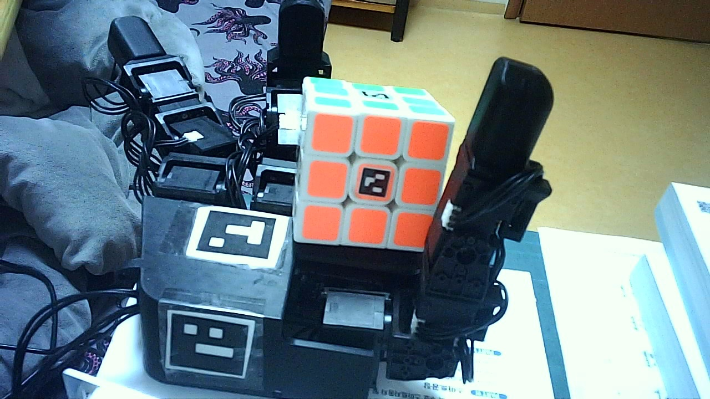
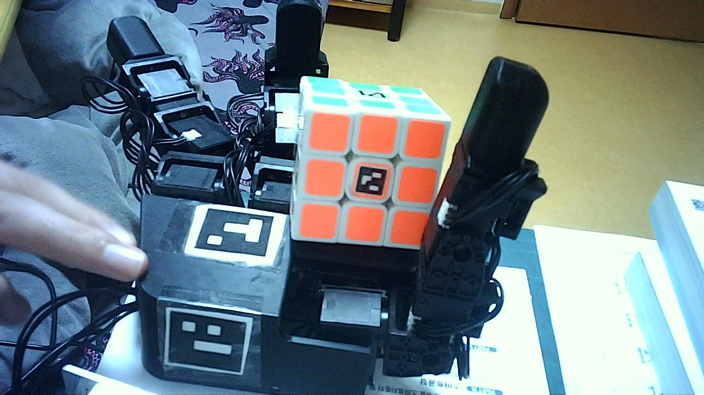
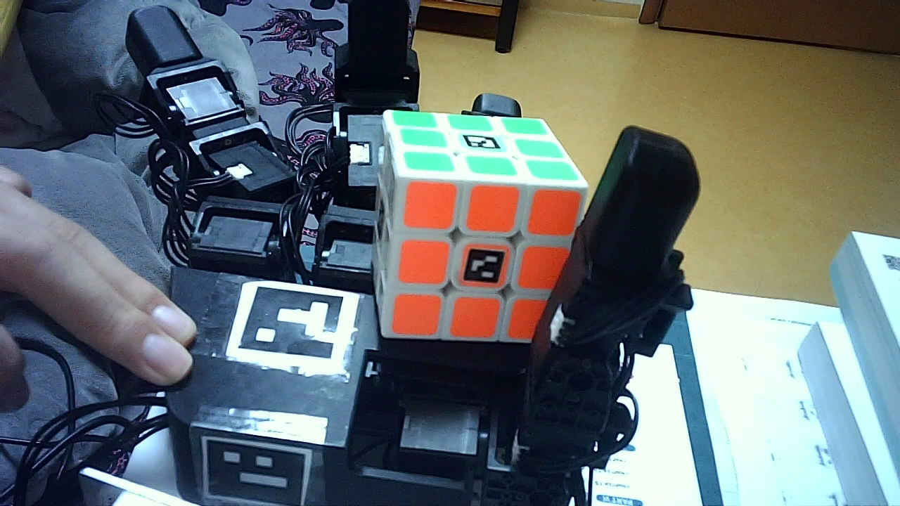

raised_support_capture_20261104_184656_555506
왼쪽: 배치 직후 / 오른쪽: 정지 관찰 후. 큐브 회전은 실행하지 않았습니다.


두 실행 모두 정상 종료했고 모터 OFF와 설정 복구를 확인했습니다. 선택된 전후 사진에서는 큐브가 비슷한 위치에 남아 있습니다. 바닥 접촉과 정확한 로봇 좌표는 확인되지 않았습니다. 파지력과 90도 회전은 검증하지 않았습니다.
추가 촬영은 요청하지 않습니다. 공유 대화는 Codex 웹과 VS Code의 작업 연속성에 관한 질문으로 확인됐습니다. 로봇 회전 설계의 새 지시는 아니며, 이어받기 요약은 CODEX_WEB_HANDOFF_20261104.md에 저장했습니다.
왼쪽: 배치 직후 / 오른쪽: 정지 관찰 후. 큐브 회전은 실행하지 않았습니다.


왼쪽: 배치 직후 / 오른쪽: 정지 관찰 후. 큐브 회전은 실행하지 않았습니다.
